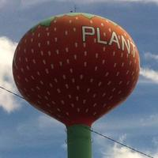
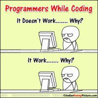

Portfolio
Obligatory text here about some work I have done.

Cheveux Pure
Salon Website done for capstones at NSS. I received most improved.
the man, The Myth, THE LEGEND.
My Story Thus far.
-

1990-2006
Born and Raised in Florida
I was born the seventh of eight children in the Sagraves family. I grew up playing soccer as much as I could; really, any sport I could. Fun fact: Plant City, Florida, from which I hail, is both the lightning and winter strawberry capitol of the world!
-

July 2016
The move
My family moved to Tennessee literally weeks before my soft-more year of high school started.
-
2006-2015
Knoxville
I finished up high school, became vary involved in my church and made life long friends in Knoxville. I was still searching for what I wanted to do with my life when I heard about Nashville Software School.
-

October 2015
Nashville and Development
I moved to Nashville to attend an intensive full-stack development school. NSS would take me from not knowing anything about HTML/CSS/JavaScript to being able to make this very website!
-
My
Life
So Far